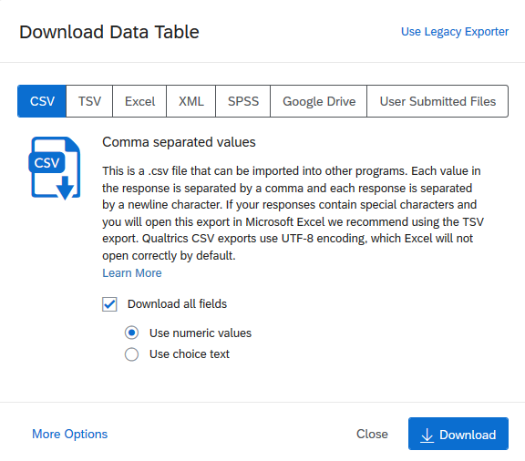

Package emocempr
Instalação do emocempr Package
No seu console de R faça o seguinte:
packages <- c("data.table","irr","dplyr","stringr","lubridate")
for (i in packages){
if(!require(i)){
install.packages(i)
}
}
if (!require("devtools")){
install.packages("devtools")}
devtools::install_github("rafaelsommer1/emocempr")
Esse bloco instalará todas as dependências bem como a última versão do emocempr packages
Adquirindo os dados
As funções do pacote trabalham basicamente com o output cru do banco de dados do qualtrics
É necessário realizar o download do .csv em sua forma númerica, da visita de interesse
Funções do Package
As principais funções implementadas até o momento focam a manipulação e limpeza dos dados retirados do qualtrics.
Até o momento é possível limpar todos os dados das visitas 1,2 e 3 com:
clean_v1(file.csv, exclude = TRUE, autoantibodies = file.csv)
clean_v2(file.csv)
clean_v3(file.csv)
Em que:
file.csv é o arquivo baixado do qualtrics
exclude se = TRUE, excluí os pacientes excluidos do estudo
autoantibodies pode-se incluir o csv com os dados de anticorpos para fusionar com o banco original